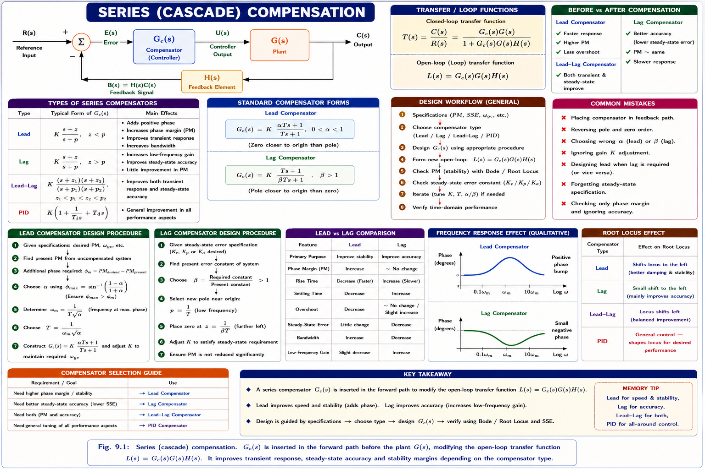
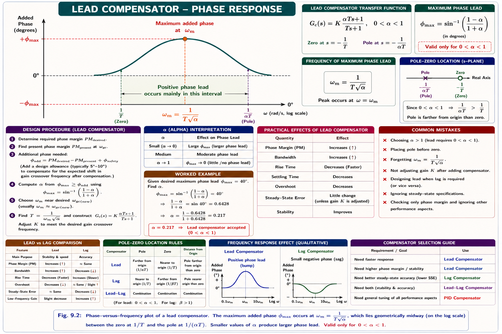
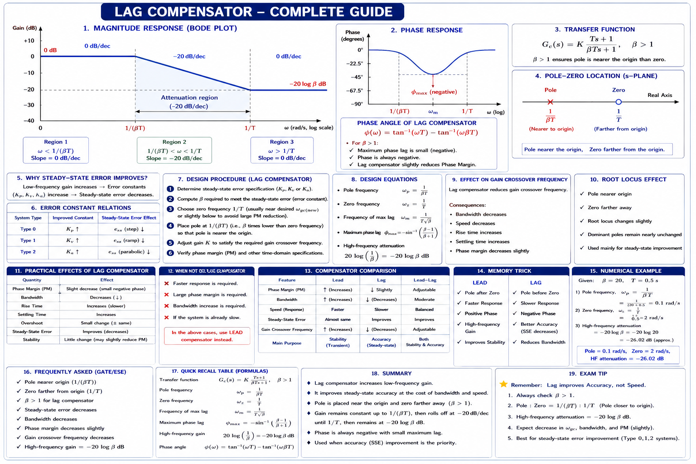
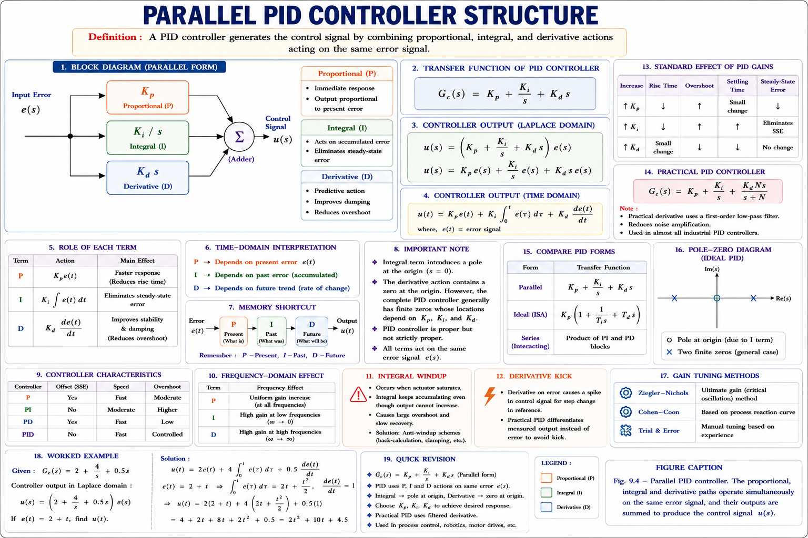
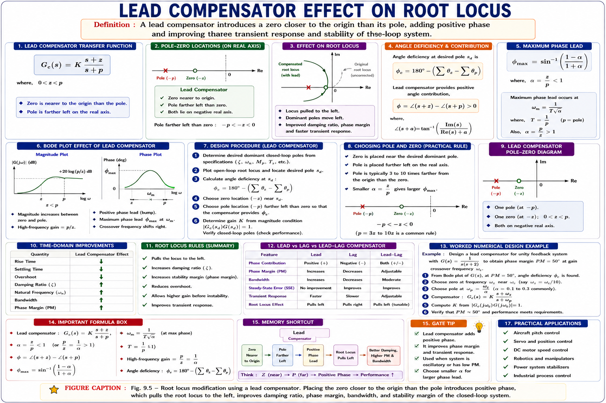

Need for compensation, lead compensator, lag compensator, lag-lead compensator, and the PID controller — frequency-response design procedures, pole-zero interpretation, and their effect on transient response, steady-state accuracy and stability margins, with complete GATE, IES and PSU exam coverage.
Every control system design begins with a plant transfer function G(s) that engineers cannot change — it is fixed by the physics of the motor, process, or aircraft being controlled. Yet the plant alone, placed inside a simple unity-feedback loop, almost never satisfies every specification simultaneously: a fast response often comes with excessive overshoot, a high loop gain that kills steady-state error often destroys the phase margin, and a system that is stable on paper may ring badly in practice. Compensation is the deliberate insertion of an additional transfer function Gc(s) into the loop so that the overall open-loop response reshapes itself to meet transient, steady-state, and stability requirements together.
Raising gain K alone improves steady-state accuracy but pushes the gain-crossover frequency outward, usually reducing phase margin and increasing overshoot. Compensation resolves this conflict by reshaping the Bode plot — adding phase where it is needed, or attenuating gain where it is not — rather than simply scaling the whole curve up or down.

A compensator is chosen so that it adds phase lead near crossover (to raise phase margin and speed the response), or reduces gain at high frequency while leaving low-frequency gain intact (to preserve accuracy while restoring margin) — or does a bit of both. Everything in this chapter is one of these two ideas applied with a different transfer function shape.
Compensating networks can be introduced at two structural locations in the loop. Series (cascade) compensation places Gc(s) in the forward path, usually right after the error detector, and is the most common form taught at the GATE/IES level because it can be analysed directly using Bode and root-locus techniques already familiar from earlier chapters. Feedback (parallel) compensation places a compensating element Hc(s) in an inner feedback path around part of the plant — common in systems such as tachogenerator velocity feedback around a position servo.
| Aspect | Series Compensation | Feedback Compensation |
|---|---|---|
| Location | Forward path, low-power point | Minor loop around plant / sub-system |
| Component power level | Low — economical, uses R-C networks or op-amps | Often higher — tachometer, rate sensors |
| Loading effect | Needs buffering to avoid loading next stage | Naturally isolates plant parameter drift |
| Sensitivity to plant variation | More sensitive | Reduces sensitivity to plant parameter change |
| Typical use | Lead / Lag / Lag-Lead / PID networks | Rate feedback, tachometer feedback |
Lead, lag and lag-lead compensators are most often realised as simple passive R-C networks (with a buffering amplifier to prevent loading) or as active op-amp networks when gain must also be supplied. Because a passive lead network always attenuates as well as advances phase, an amplifier of gain 1/α is typically cascaded with it to restore the DC gain lost in the network — this detail is a favourite conceptual trap in GATE and IES papers.
Students often assume a compensator can be designed purely from time-domain specifications directly on Gc(s)G(s). In practice, compensation is designed most conveniently in the frequency domain (Bode plot) because phase margin, gain crossover, and bandwidth map directly and additively onto asymptotic log-magnitude and phase curves — this is why Chapter 8 (frequency response) is a direct prerequisite for this chapter.
A lead compensator adds positive phase (phase lead) in a band of frequencies around its corner frequencies, which is used to increase the phase margin of the system and hence reduce overshoot and speed up the transient response. Its standard transfer function is:
Here the zero at s = −1/T lies closer to the origin than the pole at s = −1/(αT), since α < 1. A zero placed before a pole (as ω increases) always contributes net positive (leading) phase between the two corner frequencies — this is the entire mechanism of a lead network.

Differentiating the phase expression φ(ω) = tan⁻¹(ωT) − tan⁻¹(αωT) with respect to ω and setting it to zero gives the frequency of maximum phase lead and the maximum phase itself:
At ω = ωm, the magnitude gain contributed by the network is 10 log(1/α) dB — this is the "cost" in gain that a lead network always adds at the frequency of maximum phase, and it is exactly what pushes the gain-crossover frequency further out, increasing closed-loop bandwidth.
If φm required exceeds about 60°, GATE/IES questions expect you to say "use two cascaded lead networks" rather than trying to force a single network — a single-stage lead network becomes impractical (α too small, excessive noise gain) beyond this limit.
A lag compensator is the mirror image of the lead network — the pole is now closer to the origin than the zero (β > 1), so the network contributes net negative (lagging) phase. Lag compensation is not used for its phase; it is used to attenuate gain at higher frequencies while leaving low-frequency gain (and hence steady-state accuracy) essentially unchanged.

The zero 1/T and pole 1/(βT) are both chosen to lie well below the new gain-crossover frequency (typically the zero is placed a decade or so below crossover). This means the phase lag they introduce — which could otherwise reduce phase margin — is largely finished contributing by the time the frequency reaches crossover. What remains at crossover is mainly the attenuation, which lowers the gain-crossover frequency itself and thereby increases phase margin indirectly (since the uncompensated phase curve is less negative at a lower frequency).
Lead compensation trades noise immunity for speed (adds phase, raises bandwidth). Lag compensation trades speed for accuracy and noise immunity (adds attenuation, lowers bandwidth). Every GATE conceptual question on this topic reduces to this trade-off.
When a system needs both improved steady-state accuracy and improved transient response (adequate phase margin plus a fast response), a single lead or lag network cannot deliver both. A lag-lead compensator cascades a lag section (operating at low frequency, to boost accuracy) with a lead section (operating near crossover, to boost phase margin and speed).
In the classical single-op-amp realisation, the same physical network often provides both actions simultaneously with the constraint αβ = 1, so that the network has unity gain at very low and very high frequency and only reshapes the mid-band region — the region that matters for stability margin.
Lag-lead compensation is functionally similar to a PID controller — the lag part behaves like the integral action (boosting low-frequency gain) and the lead part behaves like the derivative action (boosting phase near crossover). This parallel is a favourite GATE conceptual link between the frequency-domain and classical-controller viewpoints.
The Proportional-Integral-Derivative (PID) controller is the most widely deployed controller in industrial practice. It computes the control signal as a weighted sum of the error, its integral, and its derivative:

Each of the three gains changes a distinct aspect of the closed-loop response, and understanding why is more valuable at GATE level than memorising the table below.
| Term | Rise Time | Overshoot | Settling Time | Steady-State Error |
|---|---|---|---|---|
| \(K_p \uparrow\) | Decreases | Increases | Small change | Decreases |
| \(K_i \uparrow\) | Decreases | Increases | Increases | Eliminates (for step) |
| \(K_d \uparrow\) | Minor change | Decreases | Decreases | No direct effect |
An integral term adds a free pole at the origin, raising the system Type by one. For a Type-1 loop under a step input, ess = 1/(1+Kp) with Kp→∞ under integral action, so ess → 0. This is identical in spirit to the low-frequency gain boost of a lag compensator — both raise the effective system type/gain at ω → 0.
Derivative action is often (wrongly) said to "eliminate overshoot." It reduces overshoot and improves damping by anticipating the rate of change of error (adding phase lead, exactly like a lead compensator), but it never affects steady-state error for a constant input, since d(constant)/dt = 0.
The Bode-plot method is the standard GATE/IES approach for designing lead and lag compensators. The steps below apply to a lead compensator; the lag procedure is identical except the objective is attenuation, not phase, at the new crossover.
Adding gain via the lead network (10 log(1/α) dB) shifts the gain-crossover frequency to the right, into a region where the uncompensated phase curve is usually more negative. Without the correction margin ε, the achieved phase margin would fall short of the target — this subtlety is a frequent higher-difficulty GATE numerical.
For lag-lead design, the lag part is designed first for the steady-state/gain requirement using the lag procedure, then the lead part is designed on the already-modified Bode plot to fix the phase margin — the two stages are never designed independently of each other's effect on the composite curve.
Compensation can equally be understood — and is sometimes asked about — purely in the s-plane. A lead compensator's zero-pole pair (zero nearer the origin) bends the root locus to the left, toward greater relative stability, while a lag compensator's pole-zero pair (pole nearer the origin) is placed close together near the origin so it barely perturbs the locus shape but adds an extra open-loop pole that raises the effective gain available at a given point on the locus.

Root-locus (time-domain) design of a lead compensator places the zero to cancel a slow undesirable pole and adds the compensator pole further left to satisfy the angle condition at a desired closed-loop pole location. Bode-plot (frequency-domain) design instead targets a phase margin directly. Both procedures use the same transfer function form — they are two different design entry points to the identical network.
| Property | Lead | Lag | Lag-Lead | PID |
|---|---|---|---|---|
| Phase | Adds lead | Adds lag | Lag then lead | Depends on term |
| Bandwidth | Increases | Decreases | Restored / adjustable | Adjustable |
| Steady-state error | ~Unchanged | Improves | Improves | Eliminated with I-term |
| Speed of response | Faster | Slower | Balanced | Tunable |
| Noise sensitivity | Higher | Lower | Moderate | High (D-term) |
| Analogous PID term | PD action | PI action | PID action | — |
No single compensator is universally "best" — the choice is dictated entirely by which specification is currently violated. If phase margin is inadequate but Kv is fine, use lead. If Kv is inadequate but phase margin is fine, use lag. If both are inadequate, only lag-lead (or PID) can satisfy both simultaneously.
| Quantity | Lead | Lag |
|---|---|---|
| Transfer function | \(K_c\alpha(s+1/T)/(s+1/(\alpha T))\) | \((K_c/\beta)(s+1/T)/(s+1/(\beta T))\) |
| Parameter range | \(0 < \alpha < 1\) | \(\beta > 1\) |
| \(\omega\) of extremum | \(\omega_m = 1/(T\sqrt{\alpha})\) | \(\omega_m = 1/(T\sqrt{\beta})\) |
| Extremum phase | \(\sin\phi_m = (1-\alpha)/(1+\alpha)\) | \(\sin\phi_m = (1-\beta)/(1+\beta)\) (negative) |
| Gain at \(\omega_m\) | \(+10\log(1/\alpha)\text{ dB}\) | \(-10\log \beta\text{ dB}\) |
| Primary purpose | Raise phase margin, speed up response | Raise low-\(\omega\) gain, preserve phase margin |
Given: comparing with (1+sT)/(1+αsT): T = 0.5 s, αT = 0.05 → α = 0.1
(ii) Frequency of maximum phase lead:
(iii) Maximum phase lead:
(iv) Gain at ωm:
A small α (large pole-zero separation) buys a large φm but at the cost of a large gain bump (here 10 dB) — always report both numbers together in a design answer, since GATE frequently asks for the gain penalty as a follow-up.
Required additional phase:
Find α:
Answer: α ≈ 0.406. The next step (not required here) would be to find the frequency where the uncompensated gain equals −10log(1/α) = −3.92 dB, which fixes ωm and hence T.
The lag network must attenuate the gain at ωgc′ from +14 dB down to 0 dB so that this frequency becomes the new crossover:
Answer: β ≈ 5.01. The pole 1/(βT) is therefore about 5 times closer to the origin than the zero 1/T — i.e. the pole-to-zero distance ratio (zero location ÷ pole location) equals β ≈ 5.
Open-loop transfer function:
The PI controller has introduced a pole at the origin, raising the loop from Type-0 to Type-1. For a Type-1 system, the ramp-error constant is:
Without the integral term (P-only, Kp = 2), this Type-0 plant would give ess = ∞ for a ramp. The integral action is what makes a finite, non-zero ess possible at all for this input — a P or PD controller alone cannot track a ramp with finite error on a Type-0 plant.
Zero at −2 → 1/T = 2 → T = 0.5 s. Pole at −20 → 1/(αT) = 20 → αT = 0.05 → α = 0.05/0.5 = 0.1.
Since the pole (−20) is farther from the origin than the zero (−2), and α = 0.1 < 1, this is a lead compensator.
Answer: Lead compensator, α = 0.1, φm ≈ 54.9° at ω = 6.32 rad/s.
These sub-topics consistently appear across GATE EE and IES E&T control systems papers:
A compensating network has transfer function Gc(s) = (s+2)/(s+10). This network is best described as:
Explanation: The zero (−2) lies closer to the origin than the pole (−10), which is the defining signature of a lead network (α = 2/10 = 0.2 < 1). It contributes net positive phase between 2 rad/s and 10 rad/s, raising phase margin and bandwidth.
Introducing a properly designed lag compensator into a unity-feedback loop, while keeping the steady-state error requirement satisfied, typically causes:
Explanation: A lag compensator works by reducing the gain-crossover frequency, which necessarily reduces closed-loop bandwidth and therefore slows the transient response (settling time increases), even though phase margin and steady-state accuracy both improve.
Consider the following statements about derivative (D) control action: 1. It improves system damping. | 2. It reduces peak overshoot. | 3. It amplifies high-frequency measurement noise. | 4. It eliminates steady-state error for a step input.
Which of these statements are correct?
Explanation: D-action anticipates error trends, improving damping and reducing overshoot (statements 1, 2 ✓), but being a differentiator it amplifies high-frequency noise (statement 3 ✓). It never affects steady-state error for a constant/step input since its output is proportional to de/dt, which is zero once error settles (statement 4 ✗).
A lead compensator has zero at s = −1 and pole at s = −4. The frequency (rad/s) at which the phase lead is maximum is closest to:
Explanation: ωm is the geometric mean of the two corner frequencies: ωm = √(1×4) = 2 rad/s. This shortcut — geometric mean of zero and pole locations — avoids the full α, T calculation whenever only ωm is asked.
LEad → zero closer to origin, adds phase, speeds things up (leaps forward in time). LAg → pole closer to origin, adds attenuation, slows things down (lags behind) but improves accuracy. Say the word out loud and the pole/zero order follows automatically.
Proportional ↔ plain gain K. Integral ↔ lag action (raises type, improves accuracy, slows response). Derivative ↔ lead action (adds phase, speeds response, amplifies noise). Remembering this bridge answers most conceptual "which is analogous to which" questions instantly.
Have a question on lead/lag design, PID tuning, or phase-margin calculations? Type below or pick a suggestion.
Plant \(G(s)\) is fixed; \(G_c(s)\) reshapes the open-loop response to meet transient, steady-state and stability specs together — gain alone cannot satisfy all three.
Zero closer to origin than pole (\(\alpha<1\)). Adds phase, raises \(\omega_{gc}\) and bandwidth. \(\omega_m=1/(T\sqrt{\alpha})\); \(\sin\phi_m=(1-\alpha)/(1+\alpha)\); gain penalty \(+10\log(1/\alpha)\text{ dB}\).
Pole closer to origin than zero (\(\beta>1\)). Attenuates high-\(\omega\) gain, raises \(K_v\), lowers \(\omega_{gc}\) and bandwidth. Zero placed \(\approx 1\) decade below new crossover.
Lag section (low \(\omega\)) fixes accuracy; lead section (near crossover) fixes phase margin. Functions like a PID controller in the frequency domain.
\(K_p\) speeds response, \(K_i\) eliminates \(e_{ss}\) but slows/overshoots, \(K_d\) damps overshoot but amplifies noise. P\(\leftrightarrow\)gain, I\(\leftrightarrow\)lag, D\(\leftrightarrow\)lead.
Bode-plot procedure: fix \(K \to\) find existing PM \(\to\) compute required \(\phi_m\) (with \(\varepsilon\) correction) \(\to\) get \(\alpha\) or \(\beta \to\) locate \(T \to\) verify compensated phase margin.
All technical content is derived from the following standard textbooks and learning resources. All explanations, derivations, diagrams and examples are original to Aarova AI.